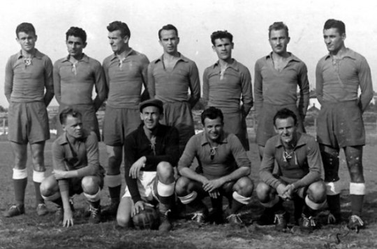
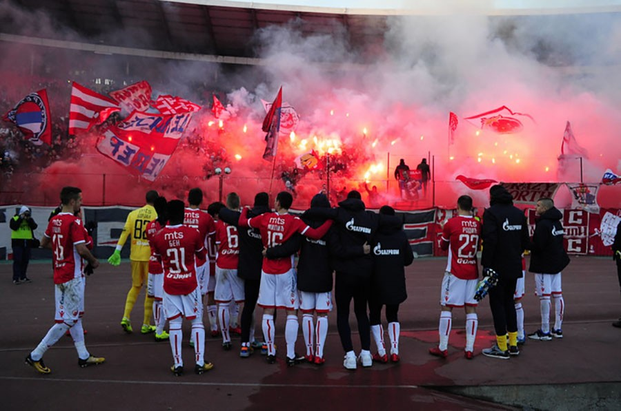

FC Red Star Belgrade, mostly known as Crvena Zvezda, was first formed in February 1945 during World War II, when a group of young men of the Serbian United Antifascist Youth League decided to form a Youth Physical Culture Society. The name Red Star was assigned after a long discussion. Other ideas shortlisted by delegates included "People's Star", "Blue Star", "Stalin", "Lenin" etc. The initial vice presidents of the Sports Society were the ones who assigned it. Red Star was soon adopted as a symbol of Serbian nationalism within Yugoslavia and a sporting institution that remains the country's most popular to this day.

Crvena Zvezda's first team (1951)
For me Red Star is much more than a club, it is a part of my childhood. My entire family has been supporting Red Star for over four decades. Every child in Serbia is being asked whether they prefer Red Star or Partizan, its fiercest and long-standing city rival and it has always had significance. Another reason why I like this club is the passion for the sport from its fans. The organized fans, known as Delije, in English "Heroes" are one of the most famous supporter groups in the world, renowned for their passion and fanaticism.

Delije after a draw against SSC Napoli in the UEFA Champions League group stage 2018